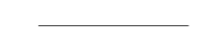

| S.No | Common Misconception | Fact |
|---|---|---|
| 1 | Electric current is a vector quantity as it has both magnitude as well as direction. | No. Even though electric current has both magnitude and direction it is not a vector quantity as it does not obey laws of vector additions. |
| 2 | Ohm's law is a fundamental law of nature. | No. Ohm's law is not a fundamental law of nature. As non ohmic conductors, like diodes, transistors etc., does not obey this law. |
| 3 | A wire carrying current is charged. | No. Electric current is the flow of free electrons in the conductor. At any instant, the number of electrons leaving the wire is always equal to the number of electrons flowing from the battery into it. Hence, the net charge on the wire is zero. |
Current electricity is the study of various effects of electrical charges in motion. The basis for its study is electric current. On the other hand the advancement in understanding current electricity came with the invention of batteries. Batteries could make charge flow continuously as a current. This development eventually led to the modern electric circuits. Apart from this, the study of ohm's law its limitations leads us to the further study of semiconductor devices that have obvious impact on our lives.
It is defined as the rate of flow of electric charge through any section of a wire. It is denoted by I. Thus,
\( I = \frac{Total \ charge \ flowing}{Time \ taken} \)
If charge q flows in a time t through any section of a wire, then \( I = \frac{q}{t} \)
The SI unit of electric current is ampere. It is also the practical unit of current. It is denoted by A.
\( 1 \ ampere(A) = \frac{1 \ coulomb(C)}{1 \ second(s)} = 1 \ coulomb \ second^{-1}(Cs^{-1}) \)
The current through a wire is called one ampere, if one coulomb of charge flows through the wire in one second.
The conventional direction of electric current is from positive terminal of a cell (or battery) to the negative terminal, through the outer circuit.
| S.No | Name | Symbol |
|---|---|---|
| 1 | Cell |
|
| 2 | Battery |
|
| 3 | Connecting wire |

|
| 4 | A wire joint |
|
| 5 | Wires crossing without contact |
|
| 6 | Fixed resistance (or Resistor) |
|
| 7 | Variable resistance (or Rheostat) |
|
| 8 | Ammeter |
|
| 9 | Voltmeter |
|
| 10 | Galvanometer |
|
| 11 | An open switch (An open plug key) |
|
| 12 | A closed switch (A closed plug key) |
|
| 13 | Electric bulb |
|
A continuous path consisting of conducting wires and other resistances (like lamps, etc.,) between the terminals of a battery, along which an electric current flows, is called an electric circuit.
A simple electric circuit
The electromotive force (e.m.f) is defined as the amount of work done by the seat (cell) on charge carries to force them to go to the point of higher potential.
Since e.m.f. is nothing but work done per unit positive charge, it is measured in volts.
Electric potential at a point in space is defined as the work done in moving a single unit positive charge from infinity to that point.
\( V = \frac{W}{q} \)
The electric potential difference between two points is said to be one VOLT. When one joule of work is done in carrying one coulomb of positive charge from one point to the another.
When negative terminal of a cell is connected to the positive terminal of the next cell, then the cells are said to be connected in series.
When cells are connected in series, the total p.d. of the combination is the sum of the p.d.s of individual cells.
Let three cells of emf \( E_1, \ E_2, \ E_3 \) be connected in series, then effective emf E is given by \( E = E_1 + E_2 + E_3 \) .
When all positive terminals of two or more cells are connected to a single point and similarly all the negative terminals are connected to another single point, then the cells are said to be connected in parallel.
When cells of different e.m.f. are connected in parallel the effective p.d. is equal to the e.m.f. of that cell which has the greatest e.m.f.
Let three cells of e.m.f \( E_1, \ E_2, \ E_3 \) such that \( E_1 > E_2 > E_3 \) be connected in parallel, the effective e.m.f E is given by \( E = E_1 \) .
Note:
In case of parallel connection, the cells provide energy to the power consumer (bulb) for a longer duration than that provided by a single power source (cell).
The physical conditions (temperature, mechanical strain, etc., remaining unchanged, the current flowing through a conductor is always directly proportional to the potential difference across its two ends. Mathematically,
\( V \propto I \)
or \( V = RI, \)
where the constant of proportionality R is called the electrical resistance.
Resistance of a conductor is defined as the ratio of the potential difference applied across the conductor to the current flowing through it. Mathematically,
\( R = \frac{V}{I} \)
The SI unit of resistance is ohm. It is denoted by \( \Omega \)
\( 1 \ ohm ( \Omega) = \frac{1 \ volt(V)}{1 \ ampere(A)} \ 1 \ volt \ ampere^{-1}(VA^{-1}) \)
One ohm is the resistance of a conductor such that when a potential difference of 1 volt is applied to its ends, a current of 1 ampere flows through it.
\( \therefore 1 \ ohm = \frac{1 \ volt}{1 \ ampere} \)
The graph below represents the relation between current and p.d. The reciprocal of slope of graph gives the resistance of the conductor.
The conductors which obey Ohm's law are called ohmic conductors. For such conductors the relation between current and potential difference is linear. Hence they are also called linear conductors. All metallic conductors are ohmic conductors. Thus, Ohm's law is obeyed only by metallic conductors.
Those devices or conductors which does not obey Ohm's law are called non-ohmic or non-linear conductors. For such conductors the graph between current and potential difference is not a straight line but a curved line. Junction diode, semiconductors and electrolytes are examples of non-ohmic conductors.
In the present day generation, electronic devices play a vital role in the fields of communication, space exploration, controlling devices, bio medical devices etc. These devices incorporate semiconductors whose special properties make them important.
A very poor conductor of electricity is called an insulator. Plastic, wood, diamond etc. are some examples of insulators. In an insulator, the forbidden gap is large and the concentration of free electrons is small ( \( \thicksim 10^7 \) per cubic meter).
Substances that conduct electricity efficiently are known as electric conductors. All metals like silver, copper, aluminium etc., are good conductors of electricity. In a conductor, valence band and conduction band overlap and there is no physical distinction between them.
In a solid, if the forbidden gap is relatively small, that is about 1 eV the solid is called a semiconductor. Pure germanium and silicon are well-known examples of semiconductors. The value of \( E_G \) for pure silicon is about 1.1 eV and for pure germanium it is about 0.72 eV at room temperature. The conductivity of a semiconductor depends on its temperature.
Energy band diagram
Depending on the relative concentration of electrons and holes, the semiconductors are classified into two types they are:
Intrinsic semiconductors
Extrinsic semiconductors
A pure semiconductor is known as intrinsic semiconductor. In an intrinsic semiconductor, the number of electrons in the conduction band and the number of holes in the valence band are equal.
An extrinsic semiconductor is one which contains small quantities of selected impurities introduced into an intrinsic semiconductor. The process of introducing impurities in small quantities into a material is called 'doping'.
An extrinsic semiconductor is a doped semiconductor. The extrinsic semiconductors can be of two types depending on the type of impurity. They are
p-type semiconductors
n-type semiconductors
A p-type semiconductor is formed when a small quantity of acceptor impurity is added to the pure semiconductor. In a p-type semiconductor, conduction is mainly by means of holes in the valence band. Hence, holes are called "majority carriers" whereas electrons are called minority carriers in a p-type semiconductor
Germanium (Ge) or Silicon (Si) have 4 valence electrons and can form 4 covalent bond. Trivalent atoms such as Gallium (Ga), Indium (In), Aluminium (Al), Boron (B) etc., have three valence electrons. When these atoms are added as impurities to Ge, the 4 valence electrons of Ge tend to share 4 more electrons to form 4 covalent bonds. However, the trivalent impurity can provide only three electrons. Therefore, these four covalent bonds become short of one electron. This shortage of an electron is equivalent to a hole. This means, each trivalent impurity atom creates one hole in the semiconductor.
A n-type semiconductor is formed when a small quantity of donor impurity is added to a pure semiconductor. In a n-type semiconductor, thus, conduction is mainly by means of electrons in the conduction band. Hence, electrons are the "majority carriers" whereas holes are the minority carriers in a n-type semiconductor.
Pentavalent atoms such as Arsenic (As), Antimony (Sb), Phosphorus (P) etc., have five valence electrons. When such an impurity is added to silicon or germanium, which are tetravalent, the 4 valence electrons of Ge tend to share 4 more electrons of pentavalent impurity to form 4 covalent bonds. Since, the pentavalent impurity can provide 5 electrons, there is an excess of one electron. This means, each pentavalent impurity atom creates one excess electrons in the semiconductor.
Note:
Addition of either trivalent or pentavalent impurity to an intrinsic semiconductor does in no way affect the electrical neutrality. Thus, p-type and n-type semiconductors are electrically neutral.
When a p-type semiconductor is suitably joined to a n-type semiconductor, a contact is established between them and is called a p-n junction.
The region close to p-n junction is depleted of mobile charge carriers and is called 'depletion region'.
The p-n junction consisting of p-type and n-type semiconductors provided with two terminals is called a p-n junction diode.
In a p-n junction diode, when p-side is connected to the positive terminal and n-side is connected to the negative terminal of a battery, diode is said to be in 'forward bias' condition. In a p-n junction diode, when p-side is connected to the negative terminal and n-side is connected to the positive terminal of a battery, diode is said to be in 'reverse bias' condition.
reverse bias condition
A p-n junction diode conducts electricity in forward bias condition and offers low resistance for current flow. In the reverse bias condition, it offers a high resistance and no current flows in the circuit (due to majority carriers).
A transistor consists of two p-n junctions formed by sandwiching either a p-type semiconductor or a n-type semiconductor between a pair of opposite type semiconductors. There are two types of junction transistors.
Emitter is shown by an arrow which indicates the conventional direction of current flow under forward bias condition.
Transistor acts as an amplifier
Transistors are also used in stabilised power supplies.
Transistors form important components of micro-electronic systems called ICs (Integrated Circuits) or 'chips'
The electrical resistance of a conductor (or a wire) depends on the following factors.
On increasing the length of a wire, its resistance increases; and on decreasing the length of the wire, its resistance decreases. Actually, the resistance of a conductor is directly proportional to its length
i.e., Resistance, \( R \propto l \) (Where l is the length of conductor).
The resistance of a conductor is inversely proportional to its area of cross-section
i.e., Resistance, \( R \propto \frac{1}{A} \) (where A is area of cross-section of conductor).
The electrical resistance of a conductor (say, a wire) depends on the nature of the material of which it is made. Some materials have low resistance whereas others have high resistance.
The resistance of all pure metals increases on raising the temperature; and decreases on lowering the temperature. But the resistance of alloys like manganin, constantan and nichrome is almost unaffected by temperature.
Note:
In all the above effects to be known all the other variables are to be kept constant.
From the above effects
\( R \propto l \) and \( R \propto \frac{1}{A} \)
Combining the above two factors, we have
\( R \propto \frac{l}{A} \)
\( R = \rho \frac{l}{A} \)
The resistivity of a substance is numerically equal to the resistance of that substance which is 1 metre long and 1 square meter in cross-section.
\( \therefore \rho = \frac{RA}{l} \)
The SI unit of resistivity is ohm - metre.
Two or more resistors are said to be connected in series, if same current passes through each of them, when some potential difference is applied across the combination.
In series resistance circuit, it should be remembered that
the current through all the resistors is same.
the total resistance of the circuit is equal to the sum of individual resistances including internal resistance of the cell, if any.
the potential difference across any resistor is proportional to its resistance.
the current in the circuit is independent of the relative positions of the various resistors in the circuit.
Figure shows the series combination of three resistors having resistances \( R_1, \ R_2 \) and \( R_3 \) . If a battery of e.m.f. V is connected across the series combination, the same current I will pass through each of them.
\( \begin{align} Then, \ V_1 = IR_1; \ V_2 = IR_2 \ and \ V_3 = IR_3 \\\\[3pt]
Also, \ V = V_1 + V_2 + V_3 \\\\[3pt]
\therefore V = IR_1 + IR_2 + IR_3 \\\\[3pt]
or \ V = I(R_1 + R_2 + R_3) \\\\[3pt]
R_S = R_1 + R_2 + R_3 ( \therefore V = IR_s) \end{align} \)
Thus, when the resistors are connected in series, equivalent resistance of the series combination is equal to the sum of individual resistances.
Two or more resistors are said to be connected in parallel, if potential difference across each of them is equal to the applied potential difference.
In a parallel resistance circuit, it should be remembered that
total current through the parallel combination is equal to the sum of individual currents through the various resistors.
the potential difference across all the resistors is same.
the current through any resistor is inversely proportional to its resistance.
the reciprocal of the total resistance of the combination is equal to the sum of the reciprocals of individual resistances.
Figure shows three resistances \( R_1, \ R_2, \ R_3 \) connected in parallel across a battery of emf V volts.
Total current, \( I = I_1 + I_2 + I_3 \)
Since the potential difference V across all the three resistances \( R_1, \ R_2, \ R_3 \) in parallel, is the same, so by applying Ohm's law to each resistance separately, we get:
\( I_1 = \frac{V}{R_1}; \ I_2 = \frac{V}{R_2} \) and \( I_3 = \frac{V}{R_3} \)
Putting these values of \( I, \ I_1, \ I_2 \) and \( I_3 \) in equation (1), we get:
\( \begin{align} \frac{V}{R} = \frac{V}{R_1} + \frac{V}{R_2} + \frac{V}{R_3} \\\\[3pt]
or \ V \left[ \frac{1}{R} \right] = V \left[ \frac{1}{R_1} + \frac{1}{R_2} + \frac{1}{R_3} \right] \\\\[3pt]
\therefore \frac{1}{R} = \frac{1}{R_1} + \frac{1}{R_2} + \frac{1}{R_3} \end{align} \)
When resistors are connected in parallel, reciprocal of equivalent resistance of the parallel combination is equal to the sum of the reciprocals of individual resistances.
Question:
A potential difference of 400 volt is maintained across a conductor of resistance 200 ohm. Calculate the number of electrons flowing through it in one second. Charge on electron, \( e = 1.6 \times 10^{-19}C \) .
Solution:
Here, V = 400 volt; R = 200 ohm; \( e = 1.6 \times 10^{-19}C \)
Now, \( I = \frac{V}{R} = \frac{400}{200} = 2 \ ampere \)
The charge flowing in 1s, \( q = It = 2 \times 1 = 2 \ C \)
Therefore, the number of electrons flowing through the conductor in 1s,
\( n = \frac{q}{e} = \frac{2}{1.6 \times 10^{-19}} = 1.25 \times 10^{19} \)
Question:
Calculate the resistivity of the material of a wire 1.5 m long, 0.4 mm in distance and having a resistance of 3 ohm
Solution:
Here, R = 3 \( \Omega \) ; l = 1.5 m;
The diameter of wire, \( d = 0.4 \ mm = 4 \times 10^{-4}m \)
Therefore, the area of cross-section of wire,
\( A = \frac{1}{4} \pi d^2 = \frac{1}{4} \pi \times (4 \times 10^{-4})^2 = 4 \pi \times 10^{-8}m^2 \)
If \( \rho \) is resistivity of the material of the wire, then
\( R = \rho \frac{1}{A} \)
or
\( \rho = \frac{RA}{l} = \frac{3 \times 4 \pi \times 10^{-8}}{1.5} = 2.153 \times 10^{-7} \Omega m \)
Question:
A simple electric circuit has a 12 V battery and a resistor of resistance of 30 ohm. What will be the current in the circuit? (Assume the resistance of the connecting wires is negligible).
Solution:
Potential difference, V = 12 volts
Resistance, R = 30 ohms
And, Current, I = ? (To be calculated)
Now, putting these values in the ohm's law equation:
\( \begin{align} \frac{V}{I} = R \\\\[3pt]
we \ get: \ \frac{12}{I} = 30 \\\\[3pt]
so, \ 30 I = 12 \\\\[3pt]
And, \ I = \frac{12}{30} amperes \\\\[3pt]
I = 0.4 amperes \ (or \ 0.4 A) \end{align} \)
Thus, the current flowing in the circuit is 0.4 amperes.
Question:
A copper wire of length 4.5 m and area of cross-section \( 1.7 \times 10^{-6} m^2 \) has a resistance of \( 4.5 \times 10^{-2} ohms \) . Calculate the resistivity of copper.
Solution:
Resistivity, \( \rho = \frac{R \times A}{l} \)
Here, Resistance, R = \( 4.5 \times 10^{-2} \Omega \)
Area of cross - section, A = \( 1.7 \times 10^{-6} m^2 \)
And, length l = 4.5 m
\( \begin{align} \rho = \frac{4.5 \times 10^{-2} \times 1.7 \times 10^{-6}}{4.5} \\\\[3pt]
= 1.7 \times 10^{-8} \Omega m \end{align} \)
Thus, the resistivity of the copper is \( 1.7 \times 10^{-8} ohm - metre \)
Question:
If four resistances, each of value 1 ohm, are connected in series, what will be the resultant resistance?.
Solution:
Four resistances, each of 1 ohm, are connected in series. Now, let four resistances \( R_1, \ R_2, \ R_3 \ and \ R_4 \) be connected in series, then their resultant resistance R is given by : \( R = R_1 + R_2 + R_3 + R_4 \)
Here \( R_1 = 1 \Omega, \ \ \ \ R_2 = 1 \Omega \)
\( R_3 = 1 \Omega, \ \ \ \ R_4 = 1 \Omega \)
So, Resultant resistance, R = 1 + 1 + 1 + 1
\( R = 4 \Omega \)
Thus, the resultant resistance is equal to 4 ohms. We will now solve one problem by applying Ohm's law to the circuit having resistances in series.
Question:
A resistance of 3 ohms is connected in series with another resistance of 5 ohms. A potential difference of 6 volts is applied across the combination. Calculate the current through the circuit and potential difference across the 3 ohm resistance.
Solution:
The first step in solving such problems based on current electricity is to draw a proper circuit diagram. For example, in this problem we have two resistances of 3 ohms and 5 ohms which are connected in series. So, first of all we have to draw two resistances on paper. Now, a potential difference of 6 volts has been applied across this combination of resistances. So, we draw a cell or a battery of 6 volts and complete the circuit. Suppose the current flowing in the circuit is I amperes.
We will now find out the value of current I flowing through the circuit. To do this we should know the total resistance R of the circuit. Here we have two resistances of \( 3 \Omega \ and \ 5 \Omega \) connected in series. So,
Total resistance, \( R = R_1 + R_2 \)
R = 3 + 5
R = 8 ohms
Now, Total resistance, R = 8 ohms
Potential difference, V = 6 volts
and, Current in the circuit, I = ?
So, applying Ohm's law to the whole circuit, we get:
\( \frac{V}{I} = R \)
so that, \( \frac{6}{I} = 8 \)
And, 8I = 6
\( I = \frac{6}{8} \)
So, Current, I = 0.75 amperes
The second part of this problem is to find out the potential difference across the ends of the 3 ohms resistance. To do this we will have to apply Ohm's law to this resistance only.
\( \therefore \) Current (through \( 3 \Omega \) resistance), I = 0.75 amperes
And, Resistance, R = 3 ohms
So, applying Ohm's law to the \( 3 \Omega \) resistance only, we get :
\( \begin{align} \frac{V}{I} = R \\\\[3pt]
or \ \frac{V}{0.75} = 3 \end{align} \)
So, Potential difference, V = 2.25 V
Thus, the potential difference across the 3 ohm resistance is 2.25 volts.
Question:
Calculate the equivalent resistance when two resistances of 3 ohms and 6 ohms are connected in parallel.
Solution:
Here two resistances of 3 ohms and 6 ohms are connected in parallel. We know that when two resistances \( R_1 \ and \ R_2 \) are connected in parallel, then their equivalent resistance R is given by :
\( \frac{1}{R} = \frac{1}{R_1} + \frac{1}{R_2} \)
Here, \( R_1 = 3 ohms \ \ \ and \ \ R_2 = 6 ohms \)
so,
\( \begin{align} \frac{1}{R} = \frac{1}{3} + \frac{1}{6} \\\\[3pt]
or \ \frac{1}{R} = \frac{2 + 1}{6} \ \ \ \ or \ \frac{1}{R} = \frac{3}{6} \\\\[3pt]
or \ \ \frac{1}{R} = \frac{1}{2} \ \ and \ \ R = 2 \Omega \end{align} \)
Thus, the equivalent resistance is 2 ohms.
Question:
In the circuit diagram given below, find :
total resistance of the circuit,
total current flowing in the circuit, and
the potential difference across \( R_1 \)
Solution:
The two resistances \( R_2 \ and \ R_3 \) are in parallel combination to each other but, taken together, they are in series combination with the resistance \( R_1 \) .
Calculation of Total Resistance:
Now, \( \frac{1}{R} = \frac{1}{R_2} + \frac{1}{R_3} \)
Here \( R_2 = 8 \Omega \ and \ R_3 = 12 \Omega \)
so, \( \begin{align} \frac{1}{R} = \frac{1}{8} + \frac{1}{12} \ or \ \frac{1}{R} = \frac{3 + 2}{24} \Rightarrow \frac{1}{R} = \frac{5}{24} \\\\[3pt]
R = \frac{24}{5} \end{align} \) and R = 4.8 ohms
Thus, the two resistances of 8 ohms and 12 ohms connected in parallel are equal to a single resistance of 4.8 ohms.
Total resistance = 7.2 + 4.8
= 12 ohms
Calculation of Total Current: The battery in the given circuit is of 6 volts. So,
Total potential difference, V = 6 volts
Total current, I = ?
And Total resistance, R = 12 ohms
\( \frac{V}{I} = R \)
or \( \frac{6}{I} = 12 \)
So, Total current, I = 0.5 ampere (or 0.5 A)
Thus, the total current flowing in the circuit is 0.5 ampere. It should be noted that the same current flows through all the parts of a series. So, the current flowing through the resistance \( R_1 \) is also 0.5 ampere.
Calculation of Potential Difference Across \( R_1 \) , potential difference across the resistance \( R_1 \) (7.2 ohms).
Now, Potential difference across \( R_1 \) = ? (To be calculated)
Current through \( R_1 \) = 0.5 ampere
And, Resistance of \( R_1 \) = 7.2 ohms
\( \begin{align} \frac{V}{I} = R \\\\[3pt]
\frac{V}{0.5} = 7.2 \end{align} \)
\( V = 7.2 \times 0.5 \)
V = 3.6 volts
Thus, the potential difference across the ends of the resistance \( R_1 \) is 3.6 volts.
Question:
What is a hole? Which type of doping creats a hole?
Solution:
A vacancy created in the covalent bond of a semiconductor is called a hole. Doping of acceptor impurities creates a hole. Acceptor impurities are trivalent compounds i.e., III A group elements they are B, Ga, In, this is because they have 3 electrons in their valence shell.
Question:
What is an extrinsic semiconductor?.
Solution:
Semiconductor doped with a suitable impurity (donor or acceptor), so that it possesses conductivity much higher than that of pure semiconductor, is called an extrinsic semiconductor.
Question:
Doping of silicon with indium leads to which type of semiconductor?.
Solution:
Doping of silicon with indium leads to p - type semiconductor. As indium belongs to III A group is has 3 valence electrons, it creates more holes this leads to majority carriers as holes making the semiconductor a positive type semiconductor i.e., p type semiconductor .
Question:
Doping of silicon with arsenic leads to which type of semiconductor?
Solution:
Doping of silicon with arsenic leads to n-type semiconductor. As gallium belongs to V A group is has 5 valence electrons, it creates more electrons this leads to majority carriers as electrons making the semiconductor a negative type semiconductor i.e., n type semiconductor.
Question:
Is the ratio of number of holes and the number of conduction electrons in an n-type extrinsic semiconductor more than, less than or equal to 1?
Solution:
In an n type extrinsic semiconductor, majority carriers are electrons while minority carriers are holes. Hence ratio of number of holes to that of number of conduction electrons in an n type semiconductor is less than 1.
Question:
How does the energy gap of an intrinsic semiconductor vary, when doped with a trivalent impurity?
Solution:
When a trivalent impurity is added to an intrinsic semiconductor, an acceptor energy level is created in the forbidden energy gap just above the valence band. Due to this, electrons from the valence band are easily transferred to the acceptor energy level.
Question:
How does a diode acts as a rectifier.
Solution:
Rectifier converts ac to dc, i.e., bidirectional to unidirectional. A diode conducts current only in forward bias condition. On applying an ac, if positive half cycle is conducted by biasing the diode then for negative forward half cycle diode gets reverse biased. Hence diode conducts only in one direction acting as a rectifier.
Question:
If an electron revolves in the path of a circle of radius of \( 0.5 \times 10^{-10}m \) at a frequency of \( 5 \times 10^{15} \) cycles/sec then find the electric current in the circle.
Solution:
Electric current in the circle, i = ne = \( 5 \times 10^{15} \times 1.6 \times 10^{-19} \)
\( \begin{align} \left ( since \ n = \frac{v}{2 \pi \ r} \ and \ i = \frac{ev}{2 \pi r} \right ) \\\\[3pt]
= 0.8 \times 10^{-3} A = 0.8 mA \end{align} \)
Question:
Find the parallel resistance to be connected to a \( 300 \Omega \) resistor such that the current passing through the \( 300 \Omega \) resistor should be 10% initial value.
Solution:
A resistance R is connected in parallel to a \( 300 \Omega \) resistor so that the current through that resistor drops to 10% of its initial current. So the circuit is as shown in the figure.
Here the resistances are parallel to each other. So P.d across are same.
\( \therefore \ 0.9i \times R = 0.1i \times 300 \Rightarrow R = \frac{100}{3} \Omega \)
Question:
A total charge of 90 coulombs flows in a conductor during a time of 5 minutes. What is the strength of current in the conductor?
Solution:
Given, q = 90 coulombs; \( t = 5 \times 60 seconds = 300s \)
\( i = \frac{q}{t} = \frac{90}{300} = 0.3 amperes \)
Question:
What is the total e.m.f when three cells of voltages 1 V, 1.5 V and 2 V are connected in
series
parallel
Solution:
Given, \( E_1 = 1 V, \ E_2 = 1.5 V \ and \ E_3 = 2 V \)
When cells are connected in series the total e.m.f.
\( E = E_1 + E_2 + E_3 \)
= 1 + 1.5 + 2
E = 4.5 Volts
When cells are connected in parallel,
the effective e.m.f. = Voltage of cell with highest e.m.f.
E = 2 Volts.
Question:
What is the total quantity of charge flows in 8 minutes when a current of 2 amperes exists in a conductor?
Solution:
Given, i = 2 A
t = 8 min = \( 8 \times 60 s = 480s \)
\( q = i \times t = 2 \times 480 = 960 coulombs \)